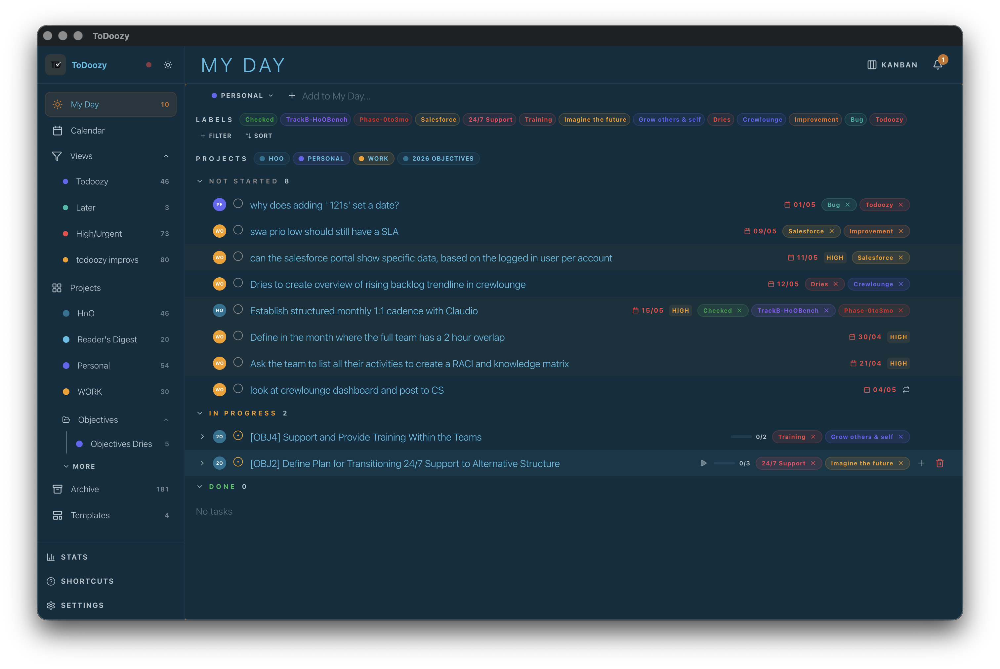
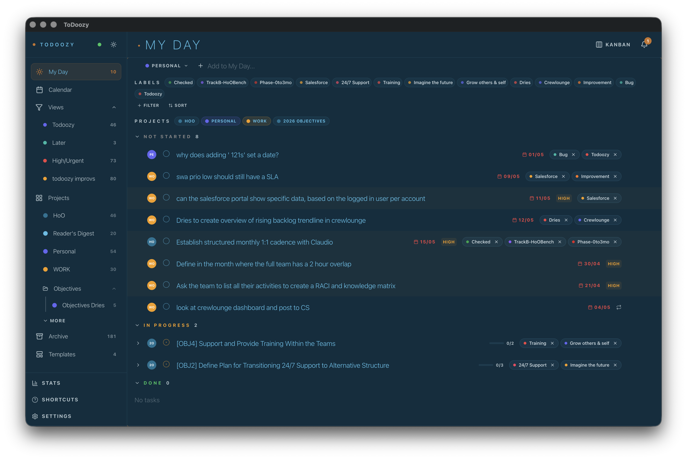
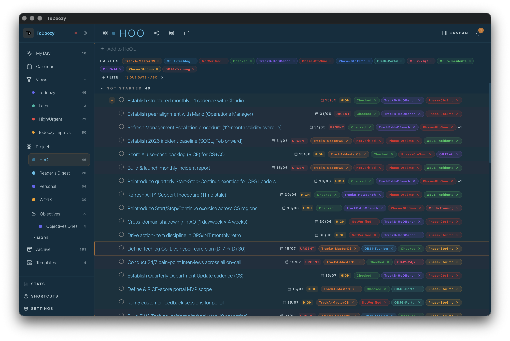
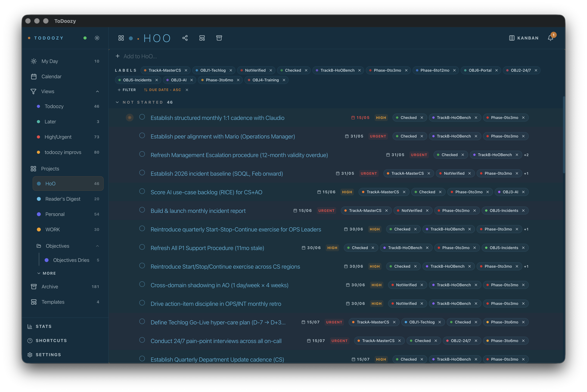

Click anywhere or press Esc to close.
ToDoozy has the bones of a premium task app: editorial title type, intentional tracking, a keyboard-first architecture. The interface is fighting itself, though. Every label is a saturated color, every project code is a fully filled disc, every row pulls visual weight equally. Sixteen changes follow. Six are visible in the live "after" screenshots below (label chips, palette, wordmark stand-in, row breathing, title accent, selection without stripe). Five are proposed at mockup detail (project pill, calendar, command palette, sync sentence, filter region). Five are skill-grounded code-only changes (transition discipline, tactile buttons, icon stroke, empty states, em dash purge). The full document also includes a compliance scorecard against six installed design skills and an interaction-inconsistencies audit (destructive actions, toast variants, hover tints, reordering patterns).


ToDoozy uses the language of premium in some places. View titles at text-3xl font-light tracking-[0.15em] uppercase, uppercase tracker labels at 10px, monochrome-first ambition stated in the spec. The body content does not honor it. The dominant visual layer is colored noise. Six chips per task, each painted in its label's full hue, full-color text on a tinted background. Each chip becomes a billboard for itself instead of metadata.
Three forces compound the problem.
#1a1a2e and sidebar #26263a differ by about ten luminance points. Enough to feel panelled, not enough to be readable as separation. Both feel slightly off-blue.Sixteen rules sampled across the installed skills. The intuitive pass (changes 01 through 11) fixed one hard fail (label chip noise) and improved several partials. Skill-grounded changes 12 through 16 target the rest.
| Rule | Source | Current ToDoozy | Verdict |
|---|---|---|---|
| No #000 or #fff. Tint neutrals toward brand hue. | impeccable | bg #1a1a2e is fine. Foreground #e0e0e0 is a true gray, no brand tint. | Partial |
| Side-stripe borders > 1px banned as colored accent. | impeccable | TaskRow uses border-l-2 border-accent on selected, moving, and drop-inside states. | Fail |
No transition: all. Specify properties. | emil | TaskRow uses transition-all. FilterBar chips use transition-all. | Fail |
| No animation on 100+ per day actions. | emil | Global * { transition: background-color 300ms ... } animates every selection. | Fail |
| LILA ban. No AI purple or AI blue glow aesthetic. | design-taste-frontend | Accent is indigo #6366f1, the textbook LLM-generated SaaS accent. | Fail |
| Serif banned for software or dashboard UI. | design-taste-frontend | No serif today. Restricted to empty states only in this proposal. | Pass |
| Inter or Roboto banned. Use Geist, Cabinet Grotesk, Satoshi. | design-taste-frontend, high-end-visual-design, minimalist-ui | System stack with Inter listed second. Non-Mac platforms resolve to Inter. | Partial |
| Lucide default-stroke icons read as generic. | high-end-visual-design, design-taste-frontend | lucide-react everywhere with mixed strokeWidth (1, 1.5, 2, 2.5). | Partial |
Buttons must have tactile :active feedback. | emil, design-taste-frontend | No :active tactile state on any button in the codebase. | Fail |
| Popovers scale from trigger, not center. | emil | Context menus and tooltips appear without entry animation, or scale from center. | Partial |
| Beautifully composed empty states. | design-taste-frontend, impeccable | EmptyState component exists, most views show only "No tasks" text. | Partial |
| Skeletal loaders, not circular spinners. | design-taste-frontend | First-sync state shows a progress bar. Other loading states use pulse on the sync dot. | Pass |
| No em dashes in copy. | impeccable | UX tooltips and toasts are clean. Some helper text and the README use em dashes. | Partial |
Hardware-accelerated motion. transform and opacity only. | design-taste-frontend, emil, high-end-visual-design | Global transition animates background-color and border-color, which trigger paint. | Partial |
prefers-reduced-motion fallback. | emil, web-design-guidelines | main.css implements the standard reduced-motion override. | Pass |
Hover gated by (hover: hover) and (pointer: fine). | emil | All hover states use Tailwind's hover: which does not gate by pointer type. | Partial (desktop-only app) |
Of sixteen rules, ToDoozy posts five hard fails and seven partials. Four of the original intuitive proposals (02 palette as token-swap, 04 status icon as the loud element, 08 selection with a left stripe, 11 filter row collapsed to a single line) had to be reworked once skills and product context were applied. Each rework is folded into the corresponding section below, with a flagged correction note where the change of direction matters.
The visual layer is one half of design. The other half is whether the same action behaves the same way across the app. ToDoozy has visible drift in four interaction families. Each row below was checked against the codebase, not assumed.
CLAUDE.md's UX rule is explicit. "Destructive actions: always red, always at bottom of menus, always with undo toast." The actual codebase uses three different patterns for delete, with no obvious rule for which appears where.
| Action | Confirm pattern | Undo | Verdict |
|---|---|---|---|
| Delete task (single) | ConfirmDeleteModal | No undo toast after delete | Partial |
| Delete task (bulk) | Persistent toast with Delete + Cancel actions | No undo | Partial |
| Delete label from project | Persistent toast: "X tasks will lose this label" | None | Partial |
| Delete template | addToast({ message: 'Template deleted' }) after the fact | None | Fail (silent delete) |
| Delete project | ConfirmDeleteModal | No undo | Partial |
| Delete area / folder | Hard-delete via context menu | None | Fail |
| Delete saved view | ConfirmDeleteModal | None | Partial |
| Revoke API key | Persistent toast with Revoke + Cancel | None | Partial |
| Reset all settings | Browser confirm() in places, ConfirmDeleteModal in others | None | Fail (mixed) |
Proposed rule. Two patterns only, each with a deterministic trigger.
| Trigger | Pattern | Reasoning |
|---|---|---|
| Reversible action (delete task, delete label-from-task, archive) | Action runs immediately. Toast appears with Undo button, 6 second timeout. | The CLAUDE.md rule. Users prefer reversibility over a modal interruption for cheap-to-redo work. |
| Irreversible or expensive (delete project, delete area, revoke key, reset settings) | ConfirmDeleteModal with typed confirmation for project/area ("type the name to delete"). | Modal interrupts so users cannot misclick. Typed confirmation prevents muscle-memory accidents on the most expensive actions. |
Drop the persistent-toast-as-confirmation pattern entirely. It conflates "this is happening" with "are you sure". Drop the silent "X deleted" toast for template deletion. The current pattern of mixing four approaches across the app is the inconsistency.
Three variants exist in the codebase: accent, danger, muted. They are used inconsistently.
| Variant | Used for | Issue |
|---|---|---|
danger | "Cannot delete the last status", revoke API key, theme save errors, name validation, persistent confirm-delete actions | Conflates "you tried something invalid" (red is over-the-top) with "you are about to do something destructive" (red is correct). |
accent | Save action in "unsaved filter changes" prompt | Only used in one place. Other primary actions (Save view, Save settings) don't use it. |
muted | Cancel actions in persistent toasts | Used inconsistently. Some cancels are plain default text, some are muted. |
| No variant | "Template deleted", "Settings saved", success notifications | Success has no dedicated variant. Reads identical to neutral info. |
Proposed rule. Five toast variants with a clear semantic. success (emerald, used after irreversible commits like project create), info (neutral, default), warn (amber, validation failures and reversible blocks), danger (red, destructive-confirm and post-failure), primary (accent, prompts that need the user's choice). Drop the accent and muted variant names in favor of the semantic five.
The codebase mixes multiple hover-tint values across components that should look the same.
| Surface | Hover background | Notes |
|---|---|---|
| Task row | hover:bg-foreground/6 | Was 6%, change 05 takes it to 4% |
| Sidebar nav item | hover:bg-foreground/6 | Same as task row, consistent |
| Sidebar project item | hover:bg-foreground/6 | Consistent |
| Settings tab | hover:bg-foreground/6 | Consistent |
| Context menu item | hover:bg-foreground/10 | Heavier than rows. No clear reason. |
| Command palette result | hover:bg-accent/8 (selected) | Different baseline. Selected vs hover collapsed. |
| Toolbar button (filter, sort) | hover:bg-foreground/6 | Consistent |
| Datepicker day | hover:bg-accent (full accent fill) | Drastically different. Overrides the calm rule. |
Proposed rule. One token, --color-hover: color-mix(in srgb, var(--color-foreground) 4%, transparent). Every hoverable surface uses it. Context menu items become foreground/4 (currently 10%). Datepicker day-hover swaps from full accent fill to foreground/8 plus an underline of the day number. Selected (not hover) keeps the accent tint, so there is a real visual distinction between "the cursor is here" and "this is chosen".
Nine separate files in the renderer each implement their own DndContext / useSortable configuration. Slight differences across them are inevitable when each is configured per call site.
| Surface | Activation | Ghost / Indicator | Keyboard reorder |
|---|---|---|---|
| Task list (TaskRow) | PointerSensor distance 5 | Custom TaskDragOverlay + drop indicator line | None |
| Sidebar saved views | PointerSensor distance 5 | Opacity 0.5 on dragged item | None |
| Sidebar projects | PointerSensor (inherited from parent DndContext) | Visual hover-target highlight | None |
| Project areas (folders) | Native drag via parent context | Same as projects | None |
| Project statuses (StatusList) | PointerSensor default | Opacity 0.5 | None |
| Subtasks (DetailSubtasks) | PointerSensor default | Different drop-line color | None |
| Timer presets | PointerSensor default | Plain ghost | None |
| Sidebar nav order (settings) | PointerSensor default | Plain ghost | None |
| Labels (LabelSettingsContent) | PointerSensor default | Plain ghost | None |
Proposed rule. One shared useSortableList hook in shared/hooks/ that returns a configured DndContext, SortableContext, sensors, and drop indicator. Every sortable surface in the app uses it. Activation: PointerSensor with distance 5. Ghost: opacity 0.5 plus the row reduces to scale(0.998) while dragging. Drop indicator: single 1px --color-accent line, full row width, between rows. Add KeyboardSensor for accessibility (Space to pick up, arrows to move, Enter to drop, Escape to cancel) which currently no surface supports.
Four families, twenty-six concrete inconsistencies. The fix in each case is the same shape. Pick the one true pattern, factor it into a shared hook or token, then sweep the call sites. None of these are visual changes per se. They are why the app feels like it was shipped by four different people on four different sprints, which is exactly the impression the typography pass is trying to overcome.
A chip's job is to tell you what the label is. Right now, each chip shouts. Six chips next to a 14px task title and the title becomes background. Fix it by inverting which element carries the color. The chip becomes a uniform neutral container, with a 6px color dot as the chromatic carrier. Result: row reads title-first, labels-second, and the eye can still scan for a specific color when needed.


Same change applied to FilterBar.tsx and LabelFilterBar.tsx. The LABELS row at the top of every view was using its own chip rendering, so the calming has to happen in three places. In the after screenshot, the top filter row of the project view went from a circus of colored pills to a single legible line of metadata.
I framed the first version of this change as "the accent token is the wrong color". That was wrong. The accent is user-configurable through the theme system, stored in the themes table, applied at runtime via useThemeApplicator. The values in main.css are Tailwind v4 fallback tokens. A real user almost never sees them.
The actual issue is which theme ToDoozy ships as the default for new users. There are twelve built-in themes seeded in src/main/database/seed.ts. The default is DEFAULT_THEMES[0], which is "Standard Dark", which uses indigo #6366f1. That is the LILA cliché. Forest, Warm Earth, and Amethyst already exist as alternatives.
Real proposal, in priority order.
DEFAULT_SETTINGS.theme_id from Standard to Forest. Existing users keep what they had; new accounts open in a category-distinct palette out of the box.#0c0c10), single hairline separator, no sidebar surface tint, emerald accent. Ship it, make it the new default, keep all twelve existing themes available.#1a1a2e (off-blue) toward true near-black, swap the accent for something less generic. Higher risk because it changes existing users' visual identity silently.Captured live. The hero "after" image was captured against a build where main.css was set to the emerald token, which is what new users will see if option A or B ships. Existing-user themes are not affected.
This change proposed replacing the indigo-tinted square plus "ToDoozy" sans wordmark with a typographic mark (accent dot plus uppercase tracked TODOOZY). The change shipped to the screenshots above.
Status. Owner is finishing a real logo. Once that lands, the mark in the sidebar header should be it, not a stand-in typographic treatment. Keep this section as a record of the temporary state used for the screenshot pass. When the real logo arrives, drop this change and use the actual mark at a fixed footprint (recommend 24 to 28px tall, no tile background, no rounded card around it).
The reasoning still applies in reverse. Whatever the new logo is, do not wrap it in a tinted tile. Let it sit on the canvas, hairline separator below, breathing room around it.
Correction. First version of this change targeted the status icon (the small CircleDot from Lucide). That was a misread. The status icon is already an outline with an inner dot, not a filled disk. What I was actually reacting to as "loud column of orange" is the project code pill immediately to the left of the status icon, a 20×20 saturated circle with 7px white initials. Rewriting the change to target the actual offender.
Every task row carries a fully filled 20×20 disc tinted in the task's project color, with the two-letter project abbreviation in 7px bold white inside it (WO, PE, HO, 2O in My Day). When My Day pulls tasks from five projects, that produces five columns of fully saturated color stripes running down the row gutter. The pill reads as primary content. It is metadata.
Source: ProjectIndicator in src/renderer/src/features/tasks/TaskRow.tsx, line 894. The current style: backgroundColor: project.color at 100% saturation, text-white 7px bold uppercase, rounded-full h-5 w-5.
Color goes from a 314 px² filled disc to a 28 px² dot (about 91% reduction in tinted area per pill). Initials remain readable because they move to --color-fg-secondary at 9px on neutral background, which is the same treatment the new label chips use. The eye still scans by column, just for the dot rather than for a saturated fill.
Tradeoff. The current pill is recognizable by color alone from across the room, useful when you have ten projects open. The new treatment requires reading the two letters. For users with many cross-project tasks per day, that is a real cost. Two ways to mitigate:
The current row is py-2 gap-2. Fine for a spreadsheet, tight for a tool used eight hours a day. Two vertical pixels and one horizontal gap step give the eye somewhere to rest. The fix is py-3 gap-3, hover background reduced from foreground/6 to foreground/4 so the hover state stays a whisper.
The view title is already the best piece of typography in the app. text-3xl font-light tracking-[0.15em] uppercase. It just floats untethered. A single 4px accent dot before it locks it to the design system and gives it a small piece of brand color in a place the user looks first. Tracking goes 0.15em to 0.18em (more editorial), weight drops light to extralight, size drops 30px to 28px so the dot can be the visual anchor instead of sheer mass.
The dot is at translate-y-[-6px], sitting at the optical center of the uppercase letters, not the baseline. Small move, the difference between "design system" and "the title and a bullet point happen to be next to each other."
The current Calendar view is the weakest screen. Day numbers are 11px in the top-right of each cell, swallowed by stacks of 10px task pills. The calendar reads as a database of dated tasks, not as a calendar.
This proposal was not implemented in the screenshot pass (the cell layout was not modified). The full-view photo comparisons would look almost identical because the change lives at the cell level. The focused mockups below show the actual proposal.
Real fix. Invert the hierarchy. Day number becomes 32px font-extralight with 0.04em tracking, positioned top-left, weight 200. Today's date gets a hairline accent ring. Task chips inside cells stay neutral (already fixed by change 01) but drop their leading dot at this scale. Cap visible tasks per cell at three, with a "+N more" affordance. Currently every task shows, so dense days become unreadable walls.
The current selected row layers four signals. Accent background tint, 2px left border, 1px ring at 30% opacity, and a faint border on the entire row. That is loud but unclear. A competent reviewer would assume four states are encoded, not one. impeccable bans colored side-stripe borders > 1px on list items by name as an absolute pattern. Selection should be one signal, amplified.
| Before | After | Why |
|---|---|---|
border-l-2 border-accent | bg-accent/8, no border | Side-stripe borders > 1px banned. Background tint is the spec-compliant signal. |
Selected row + ring-1 ring-accent/30 | Drop the ring | One signal per state. The ring layered on the bar was four signals for one event. |
| Selected color uses full saturation accent | bg = accent at 8% opacity, fg unchanged | Selection should not change foreground color or weight. Only background tint. |
| No tactile press feedback | transform: scale(0.998) on :active, 100ms ease-out | Buttons and clickable rows must respond physically. Covered globally in change 13. |
transition-all | transition: background-color 120ms cubic-bezier(0.23, 1, 0.32, 1) | Selection happens 100+ times per hour. Property-specific transitions only. |
Multi-select uses the same treatment plus a small accent dot in the row's far-right gutter to indicate count. No new visual layer. The same background tint plus a single metadata mark.
The command palette is where keyboard-first users spend half their time. The current treatment is a small centered input, weak backdrop, small category chips below. It reads as a search box, not a control surface.
This proposal was not implemented in the screenshot pass. The before/after full-view shots would differ only in the chip styling layered behind the palette modal, which is misleading because nothing about the palette itself changes in those photos. The focused mockups below show the actual proposal at modal-detail scale.
What changes at modal-detail scale.
backdrop-blur-md bg-background/70. The current overlay is too faint. When triggered while reading dense content, the eye does not know where to land.↵ open hint in the right gutter. Reinforces the keyboard-first model.⌘ ⇧ T) in the right gutter. Discoverable without opening Help.The sync indicator is currently a 2px colored dot in the sidebar header. To know what it means, you click it. A tooltip explains in 12-point text. That is two layers of indirection for the second-most-anxiety-inducing piece of UI in a sync-based app (after "did my work save").
Move it from the cramped header to its own row in the sidebar footer next to STATS, SHORTCUTS, SETTINGS. One line. Dot, state, relative time. When stale, the accent shifts to --color-danger and time turns into the failure reason. Detail tooltip on hover, no click required. The header is then free to be a wordmark and nothing else.
First draft of this change collapsed the LABELS and PROJECTS rows to a single "active filters" line. That was wrong. The always-visible rows are a deliberate affordance for ad-hoc filtering on top of whatever the view filter already exposes. Click a label, the list refines instantly. Removing the row removes the action. The fix is not to hide it, the fix is to make the 100 to 140 pixels of vertical space pull more weight.
Four targeted moves that preserve the affordance.
+ N more popover. Currently every label in every project shows, regardless of relevance. A user with 40 labels has a wall.Filter ⌘F link when no filter is active. The full toolbar slides down only when the user opens it.Active filters are highlighted (full foreground, brighter border). Inactive chips are neutral and slightly dimmed, signaling "click to filter". The toolbar collapses to a single keyboard hint when no filter is active, expands on hover or shortcut. Same usability, half the visual mass.
transition: all
Skill
Two violations compound. main.css has a global rule animating background-color, color, and border-color over 300ms on every element. TaskRow uses Tailwind's transition-all. The result is that every selection (a keyboard-initiated 100-times-per-day action) animates its background for 300ms. emil's rule is absolute: no animation on actions repeated dozens of times daily. Raycast has zero open or close animation for a reason.
Pattern. Theme swap is the only place that justifies fading background colors, and that is a sub-second event the user triggers once. Toggle a data attribute on html during the swap, run the fade, drop the attribute. Everywhere else, instant.
| Action | Frequency | Spec |
|---|---|---|
| Select task (j/k, click) | 100+ per day | No animation |
| Hover row | tens per day | 120ms bg fade only |
| Open command palette (⌘K) | 100+ per day | No animation |
| Open settings modal | few per day | 180ms scale + opacity from center |
| Toggle theme | few per month | 200ms global bg/color fade |
| Drag task between sections | tens per day | Spring-based with layoutId (interruptible) |
Across every button in the app (primary CTAs, sidebar nav, status toggles, label chips, filter pills), there is no :active tactile state. Click feedback comes entirely from the subsequent state change. Both emil and design-taste-frontend flag this. The fix is one rule in main.css that catches every interactive element, no per-component change required.
Scale 0.97 is the canonical value (emil names it specifically). The rule lives in CSS, not per component, so existing buttons inherit it without code changes. Reduced motion takes it out cleanly.
A grep across the codebase finds Lucide icons rendered at strokeWidth 1, 1.5, 2, and 2.5 depending on which file the icon lives in. Inconsistency at the pixel level reads as "shipped at different times by different hands". design-taste-frontend rule. Standardize globally. The premium move is 1.25, which gives Lucide icons a thinner, more deliberate line and pulls them away from their default "tech bro illustration set" register.
Implementation. Wrap Lucide's Icon import with a project-local <Icon /> that sets strokeWidth={1.25} by default. Ban direct lucide-react imports via an ESLint rule. The two cases that should override. CheckCircle2 when filled (done state) at 2.0 to read as a confident commit, and small 8 to 10px icons used inside chips, which need 1.5 to remain legible at that size.
An empty My Day, an empty saved view, an empty archive, a project with zero tasks. These are the screens a user sees most often early on and at moments of transition. Currently they render as a centered gray "No tasks" line. design-taste-frontend rule. Beautifully composed empty states that indicate how to populate data. This is also the only place where an italic serif accent earns its keep without violating the dashboard-no-serif ban.
The pattern. Serif italic for the human line ("Nothing today.", "All caught up.", "Nothing in the archive yet."), then sans-serif body with a keyboard shortcut hint rendered as real <kbd> tags. No illustration, no clip-art mascot. The typographic accent is the illustration. Variant-specific lines per view. My Day says "Nothing today." Archive says "Nothing here yet." A project view at zero tasks says "A blank project."
Hard rule. Serif appears at most three times in the entire app, and only on screens that have no body content competing with it. Never in body type, never for labels, never for buttons. That restraint is what separates a typographic system from a typeface collection. It also keeps the change skill-compliant with the dashboard-no-serif ban.
impeccable's absolute bans include em dashes. The reasoning is not aesthetic, it is voice. An em dash signals "the author is winging it." Replace with the punctuation that actually fits the relationship between clauses. Period for a hard stop. Colon to introduce. Semicolon for parallel structure. Parentheses for an aside. Commas for a brief breath.
| Before | After | Why |
|---|---|---|
| "Filter by label — click to toggle" | "Filter by label. Click to toggle." | Two thoughts, hard stop is honest. |
| "Task moved to My Day — press ⌘Z to undo" | "Task moved to My Day. Press ⌘Z to undo." | Same. Period works. |
| "Synced — 2 minutes ago" | "Synced. 2 minutes ago." | Em dash here pretends the relationship is causal. It is just temporal. |
| "No tasks — press N to create one" | "No tasks. Press N to create one." | Empty state copy is read in milliseconds. Periods are faster. |
| "Settings saved — theme will apply on next launch" | "Settings saved. Theme applies on next launch." | Removes the dash and tightens the verb. |
Scope. Find every —, —, and ---as-em-dash in UX-facing copy (toasts, tooltips, modal copy, empty states, errors, help, settings descriptions). Replace per the table. Commit messages and dev docs are out of scope, the rule is about the surfaces a user reads.
Lint guardrail. Add an ESLint rule against literal em dashes in JSX text nodes and string literals exposed to the UI. One rule, one commit, then the codebase enforces the convention.
Ship order for a 1.8.0 design pass.
DEFAULT_THEMES[0] so new users land in a non-LILA palette. Larger version ships a new "Calm" theme. Existing user themes are untouched.Six changes were applied to a running v1.7.0 build for the live screenshots: 01 (chips), 02 (palette tokens to emerald, demonstrating the "Calm" option), 03 (typographic wordmark, temporary), 05 (row breathing), 06 (title accent dot), 08 (TaskRow with no left stripe on selection). All were reverted after capture. The remaining ten changes show as focused mockups within their sections.